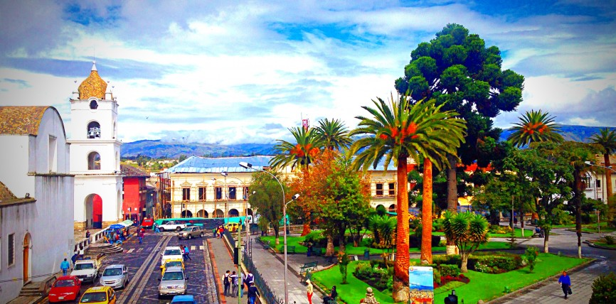

Blog sobre Latacunga
Latacunga, también conocida como San Vicente Mártir de Latacunga, es una ciudad ecuatoriana; cabecera cantonal del Cantón Latacunga y capital de la Provincia de Cotopaxi, así como la urbe más grande y poblada de la misma.
Sus orígenes datan del siglo XVI, y en la actualidad es uno de los principales núcleos urbanos de la región interandina. Es uno de los más importantes centros administrativos, económicos, financieros y comerciales del centro del Ecuador.